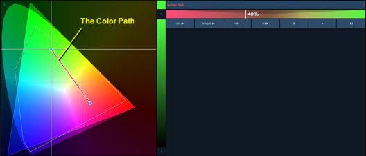
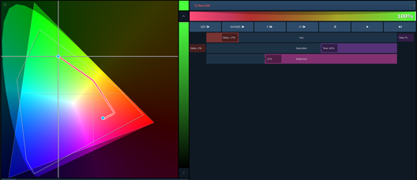
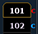

Note: Color path is only applicable for additive mixing systems.
Color Path is a option for controlling color fades between cues. By default, color fades happen in the native space of the fixture. If you want a fade that resembles a fade in a different color space, you can do that using color paths. There are eight preprogrammed color paths, and you can also record your own . Up to 1000 color paths are supported.
To open the color path display, click on the gear icon in the color picker display and select Fade. To open the color path list display, press the {Color Path} icon in the home screen, use [Tab] [3][3], or from the CIA by going to Browser>Record Target List>Color Path.
Color paths are selected either by clicking on the drop down above the color path or by using {Color Path} [n].
Note: Channels involved in the fade have to be selected before you can choose or modify a color path.
The color path display has a drop down list of the available paths, a color path preview bar, and control buttons. An indication line will display on the color space to show the color fade.

Available control buttons are:
You can also click on the color path preview bar to scrub to any point along the fade.
Additional controls may be available based on the color path selected. For example, Color Path 7 has additional controls for Hue, Saturation, and Brightness. You can move those controls to adjust the fade, and you'll see a representation of those changes in both the color path preview bar and in the color space.

Changes can be stored in the destination cue as absolute data by using [Update] or [Record]. When there's a change to the color path information, a red c will display next to the channel number and the color path's name will display in red in the color path display. When that data has been saved, a blue c will display.

The color path's name will also display in blue in the color path display.You can save changes to a new color path by using [Record]{Color Path} [n]. That data will then be referenced, and any changes made to that path will be used anytime that path is used Press [Shift] & {Color Path} to see the values behind the referenced data.
Note: If multiple channels are selected that have different color paths assigned to them, a + will display by the color path name in the color path preview bar.
See [About] Color Path and {Attribute} Display and Settings for more information.